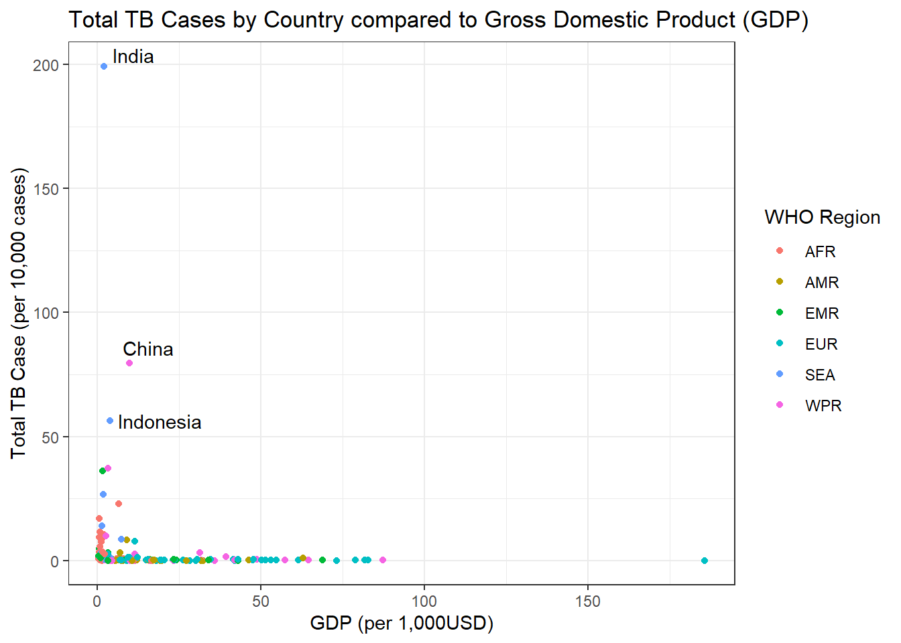
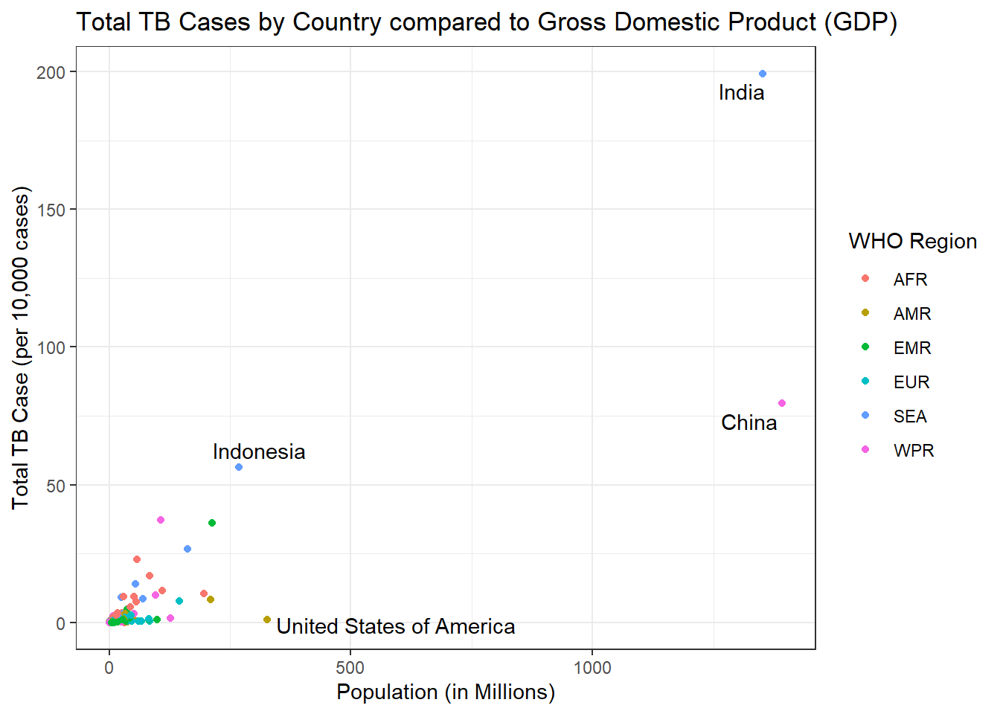

library(tidyverse)TL:DR
Today I am going to dive into some real life data from the World Health Organization (WHO), exploring new and relapse cases of Tuberculosis. I clean up the data, and then make a few graphs to explore different variables.
Load Packages
Since I am going to use quite a few packages in the tidyverse I am going to load them all in at once instead of individually.
Load in Data
We are using the WHO data set which contains tuberculosis (TB) cases broken down by year, this data set is contained in the Tidyr package, however its only recent up to 2014. For a little added fun I have downloaded the latest data from the WHO website, Found here. For some added fun I have also included GDP per Capita data from World bank Found here
who_raw <- read.csv("TB_notifications_2020-02-11.csv")
#GPD file contains 4 rows of instrusctions above the actually data, we can tell
#read.csv to skip these using the skip command
gpd_raw <- read.csv("API_NY.GDP.PCAP.CD_DS2_en_csv_v2_713080.csv",
skip = 4)Transform
This data set is very ugly looking! The first 3 columns are all country Identifiers, with column four indicating the WHO region. This is redundant and can be dropped down to one Identifier and Region. As we can see there are quite a few Variable columns that are in fact values and not true Variables. When reading the data dictionary for this data set, WHO has changed their reporting over the years, so for our purposes we can strip a lot of the extra data out. Lets try and look at three types of TB, Extrapulmonary, Lab Diagnosed, and Clinician Diagnosed. As well as try and look at the breakdowns by Age and Sex of new and relapse case (post 2012) Lots of Cleaning to do, lets get to it!
who1 <- who_raw %>%
#lets drop some columns not needed for our exploration, what each column means can be found in the CSV Data dictionary file
select(-iso2
,-iso_numeric
,-(rdx_data_available:hiv_reg_new2)
,-(new_sp:rel_in_agesex_flg)
) %>%
#Lets just look at new date
filter(year >= 2013) %>%
#Move the values that are currently stored as variables to observations
pivot_longer(cols = newrel_m04:newrel_sexunkageunk
,names_to = "key"
,values_to = "values"
) %>%
separate(col = key
,into = c("new","sexage")
,sep = "_"
) %>%
#the data set contains male, female and unknown
mutate_if(is.character
,str_replace_all
,pattern = "sexunk"
, replacement = "u"
) %>%
separate(col = sexage
,into = c("sex","age")
,sep = 1) %>%
mutate(age_start = case_when(
str_detect(age, "65") ~ "65"
,(str_length(age) == 2) ~ str_match(age, "\\S")
,(str_length(age) == 3) ~ str_match(age, "\\S")
,(str_length(age) == 4) ~ str_match(age, "\\S\\S")
,TRUE ~ ""
)
,age_end = case_when(
str_detect(age, "65") ~ "& Over"
,(str_length(age) == 2) ~ str_match(age, "\\S$")
,(str_length(age) == 3) ~ str_match(age, "\\S\\S$")
,(str_length(age) == 4) ~ str_match(age, "\\S\\S$")
,TRUE ~ ""
))
#overall WHO data is now cleaned and tidy.
# Lets tidy up the GPD data so we can match it to our WHO data set
gdp1 <- gpd_raw %>%
select(-(Indicator.Name:X2012)
,-X2019
,-X) %>%
pivot_longer(cols = X2013:X2018
,names_to = "year"
,values_to = "gdp") %>%
mutate_if(is.character
,str_remove_all
,pattern = "X(?=\\d*)") # regex to check for an X followed by a digitJoin Data
Lets combine the data sets so we can later visual TB Cases based on a countries GDP per capita.
who_combined <- who1 %>%
rename(Country.Code = iso3) %>%
mutate(year = as.character(year)) %>%
left_join(y = gdp1) %>%
select(-Country.Name)Analyze
Lets first explore 2018 and see if GDP has any affect on the amount of TB cases in a particular country.
g1 <- who_combined %>%
filter(str_detect(age,"014|15plus|u"),year == 2018) %>%
group_by(country) %>%
summarise(sum_tb_cases = (sum(values,na.rm = TRUE)/10000)
,gdp = first(gdp)/1000
,who_region = first(g_whoregion)) %>%
mutate(
label = ifelse((sum_tb_cases>50), yes = as.character(country),no = "")) %>%
ggplot(aes(x = gdp, y = sum_tb_cases )) +
geom_point(aes(color = who_region)) +
ggrepel::geom_text_repel(aes(x = gdp, y = sum_tb_cases, label = label)) +
labs(
title = "Total TB Cases by Country compared to Gross Domestic Product (GDP)"
,x = "GDP (per 1,000USD)"
,y = "Total TB Case (per 10,000 cases)"
,color = "WHO Region"
) +
theme_bw()
g1
Subset
Lets subset the above data to remove some of the outliers.
g2 <- who_combined %>%
filter(str_detect(age,"014|15plus|u"),year == 2018) %>%
group_by(country) %>%
summarise(sum_tb_cases = (sum(values,na.rm = TRUE)/10000)
,gdp = first(gdp)/1000
,who_region = first(g_whoregion)) %>%
mutate(
label = ifelse((sum_tb_cases>50), yes = as.character(country),no = "")) %>%
ggplot(aes(x = gdp, y = sum_tb_cases )) +
geom_point(aes(color = who_region)) +
ggrepel::geom_text_repel(aes(x = gdp, y = sum_tb_cases, label = label)) +
labs(
title = "Total TB Cases by Country compared to Gross Domestic Product (GDP)"
,x = "GDP (per 1,000USD)"
,y = "Total TB Case (per 10,000 cases)"
,color = "WHO Region"
) +
xlim(0,50) +
ylim(0,50) +
theme_bw()
g2We can see in the graph above there seems to be a small correlation between lower GDP and amount of TB cases.
A different way to look
Could there be any correlation between a countries population and the amount of TB cases? Maybe its just as simple as having more people means more people to get sick? Lets bring in another data set, again from World Bank Found Here, this contains total population data by country.
pop_raw <- read.csv("API_SP.POP.TOTL_DS2_en_csv_v2_713131.csv"
,skip = 4)
#If this looks famialer its because it is, the data set looks very simalar to the GDP data
#In the future this could be moved to a function to allow cleaning much easier
pop1 <- pop_raw %>%
select(-(Indicator.Name:X2012)
,-X2019
,-X) %>%
pivot_longer(cols = X2013:X2018
,names_to = "year"
,values_to = "population") %>%
mutate_if(is.character
,str_remove_all
,pattern = "X(?=\\d*)")
#now lets combine this into are overall data set
who_combined <- who_combined %>%
mutate(year = as.character(year)) %>%
left_join(y = pop1) %>%
select(-Country.Name)
#now lets Graph again
g3 <- who_combined %>%
filter(str_detect(age,"014|15plus|u"),year == 2018) %>%
group_by(country) %>%
summarise(sum_tb_cases = (sum(values,na.rm = TRUE)/10000)
,population = first(population)/1000000
,who_region = first(g_whoregion)) %>%
mutate(
label = ifelse((population>250), yes = as.character(country),no = "")) %>%
ggplot(aes(x = population, y = sum_tb_cases )) +
geom_point(aes(color = who_region)) +
ggrepel::geom_text_repel(aes(x = population, y = sum_tb_cases, label = label)) +
labs(
title = "Total TB Cases by Country compared to Gross Domestic Product (GDP)"
,x = "Population (in Millions)"
,y = "Total TB Case (per 10,000 cases)"
,color = "WHO Region"
) +
theme_bw()
g3 
Further Exploration
Maybe we are on to something, the more people, the more likely they are to get sick! However India seems to have a very large number of cases so lets break these cases down further by age group for 2018.
g4 <- who_combined %>%
filter(year == 2018
,country == "India"
,!(str_detect(age,"15plus|ageunk|u|014"))
,(str_detect(sex,"m|f"))
) %>%
mutate(age_range = glue::glue("{age_start} -- {age_end}")) %>%
ggplot(aes(x = reorder(age_range, as.numeric(age_start)), y = (values/1000), fill = sex)) +
geom_col(position = "dodge") +
labs(
title = "TB Case in India by age and gender 2018"
,x = NULL
,y = "Total Cases (per 1000)"
,fill = "Gender") +
scale_fill_manual(labels = c("Female","Male"), values = c("#e9a3c9","#67a9cf") )
g4There seems to be a huge spike in cases after adolescences. Females have a sharp decline the older they get, where as male case stay elevated with a slight decrease at 55.
Last Exploration
Lets look at overall cases in India, going back to 1980 and see if there as been any trends. To get these numbers we will go back to our raw data and strip everything out expect the total count
g5 <- who_raw %>%
filter(country == "India") %>%
select(year, c_newinc) %>%
ggplot(aes(x = year, y = c_newinc/1000000)) +
geom_line() +
geom_point() +
labs(
title = "New and Relapse Tuberculosis Cases In India \n1980 -- 2018"
,x = NULL
,y = "Total Cases (in millions)") +
theme_bw() +
theme(plot.title = element_text(hjust = 0.5)) + #center title
scale_x_continuous(breaks = seq(1980,2020,5)) +
scale_y_continuous(breaks = scales::pretty_breaks(n=10)) #different way to add tick marks
g5Cases were steadily rising from 1980 to 1990, then suddenly feel off. Starting in the early 2010s there was a sharp increase and the amount of new and relapse cases just keep growing.
Next Steps
While no other country has the amount of cases that India does, the sudden spike in cases at adolescences asks the question do other countries follow this same trend? We can also see the sudden spike in the 2010s, again is this just based in India or do we see this trend in other countries. There is much more exploration we can do with this data set at a later time!
Reuse
Citation
BibTeX citation:
@online{belanger2020,
author = {Belanger, Kyle},
title = {Basic {Exploration} of {WHO} {Tuberculosis} {Data}},
date = {2020-02-13},
langid = {en}
}
For attribution, please cite this work as:
Belanger, Kyle. 2020. “Basic Exploration of WHO Tuberculosis
Data.†February 13, 2020.